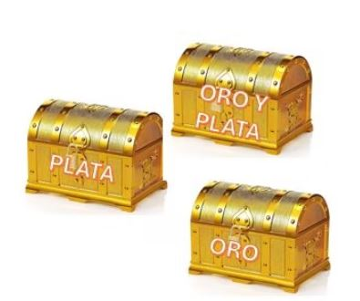

Solución del Reto 8
Oro, plata y etiquetas err√≥neas üè∫

Este acertijo pone a prueba la lógica deductiva y la capacidad de razonar con información incompleta.
La clave: Todas las etiquetas están equivocadas, así que siempre podemos usar la información de un solo cofre para deducir los demás.
- Elige el cofre etiquetado como "ORO Y PLATA".
Sabemos que esta etiqueta es incorrecta, así que este cofre contiene solo ORO o solo PLATA.
- Saca una moneda de ese cofre:
- Si es oro → este cofre es el de ORO.
- Si es plata → este cofre es el de PLATA.
- Ahora que identificaste este cofre, puedes etiquetar correctamente los otros dos cofres:
- El cofre que estaba etiquetado como el del tipo de moneda que acabas de encontrar será el cofre mezclado.
- El último cofre, que queda, será del otro tipo de moneda.
Con una sola extracción de moneda, podemos reorganizar las etiquetas correctamente. ✅